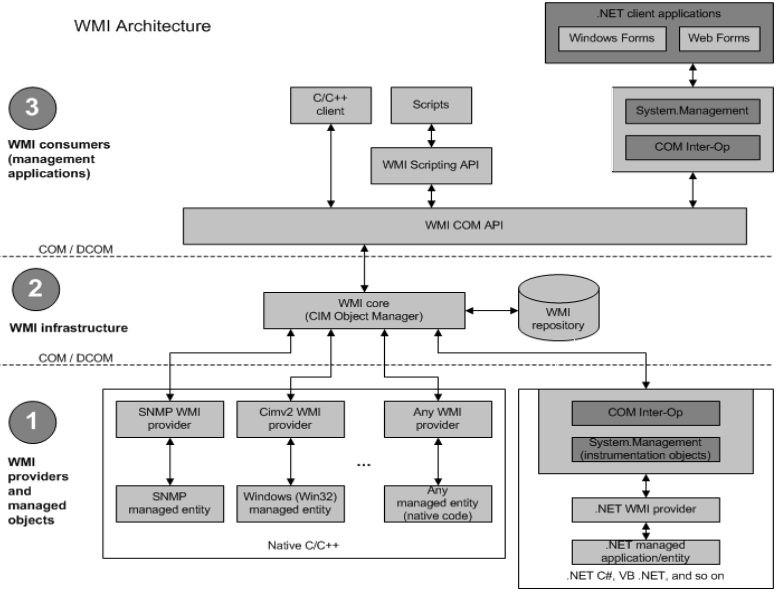

Purpose
Windows Management Instrumentation (WMI) is the infrastructure for management data and operations on Windows-based operating systems. You can write WMI scripts or applications to automate administrative tasks on remote computers but WMI also supplies management data to other parts of the operating system and products, for example System Center Operations Manager, formerly Microsoft Operations Manager (MOM), or Windows Remote Management (WinRM).
Note The following documentation is targeted for developers and IT administrators. If you are an end-user that has experienced an error message concerning WMI, you should go to Microsoft Support and search for the error code you see on the error message. For more information about troubleshooting problems with WMI scripts and the WMI service, see WMI Isn't Working!
Note WMI is fully supported by Microsoft; however, the latest version of administrative scripting and control is available through the Windows Management Infrastructure (MI). MI is fully compatible with previous versions of WMI, and provides a host of features and benefits that make designing and developing providers and clients easier than ever. For more information, see Windows Management Infrastructure (MI).
Invocation:
PowerShell Get-WmiObject
wmic:
Default tool on Windows
Executes WQL query: "select * from Win32_process" or an alias "process list"
Specify /node for remote machines
wmis:
Wrapper on Linux for "wmic process call create"
Also available as pth-wmis
MOFs
We can look at WMI as a collection of objects that provide access to different parts of the operating system, just like with PowerShell objects we have properties, methods and events for each. Each of these objects are defined by what is called MOF (Manage Object Format) files that are saved in %windir%\System32\wbem with the extension of .mof. The MOF files get loaded by what is called a Provider, when the Provider is registered he loads the definitions of the objects in to the current WMI Namespace. The Namespace can be seen a file system structure that organizes the objects on function, inside of each namespace the objects are just like in PowerShell in what is called Class Instances and each of this is populated with the OS and Application information as the system runs so we always have the latest information in this classes.
Namespaces
Namespaces are organize in a hierarchical way where \root is the top level for all other namespaces. The default namespace where most of the other namespaces and classes are located is root\CIMv2 on Windows Kernel 6.x on Kernel 5.x it is Default\CIMv2. Some are installed by default and others are only available when specific applications are installed.
In summary each Namespace contains Classes, these have:
- Methods Actions that can be taken.
- Properties Information that can be retrieved.
- Instances Instances of the class objects (services, Processes, Disks) each instance with Methods and Properties.
- Events are actions that WMI can monitor for and take action when they happen.
Caveats
Now WMI is great, do not get me wrong, but sadly it does have some caveats the main ones being:
- Not all classes are available on all versions of Windows. Check
- Some applications even from MS have Providers in one version and not in another (Office) and in some cases they even change the properties and methods.
In other words if you plan on running WMI queries against a series of hosts that may be of different versions of Windows or a specific application do make sure you test and validate your results. This goes the same for Architecture if you are testing x64 or x86.
The Huge WMI Book by FireEye
https://www.fireeye.com/content/dam/fireeye-www/global/en/current-threats/pdfs/wp-windows-management-instrumentation.pdf
WMI Attacks
WMI is an extremely powerful tool for attackers across many phases of the attack lifecycle. There is a wealth of WMI objects, methods, and events that can be extremely powerful for performing anything from reconnaissance, AV/VM detection, code execution, lateral movement, covert data storage, to persistence. It is even possible to build a pure WMI backdoor that doesn’t introduce a single file to disk. There are many advantages of using WMI to an attacker:
• It is installed and running by default on all Windows operating systems going back to Windows 98 and NT 4.0. • For code execution, it offers a stealthier alternative to running psexec.
• Permanent WMI event subscriptions run as SYSTEM.
• Defenders are generally unaware of WMI as a multi-purpose attack vector.
• Nearly every operating system action is capable of triggering a WMI event.
• Other than storage in the WMI repository, no payloads touch disk.
The following is a list of how WMI can be used to perform the various stages of an attack; however, it is far from exhaustive.
